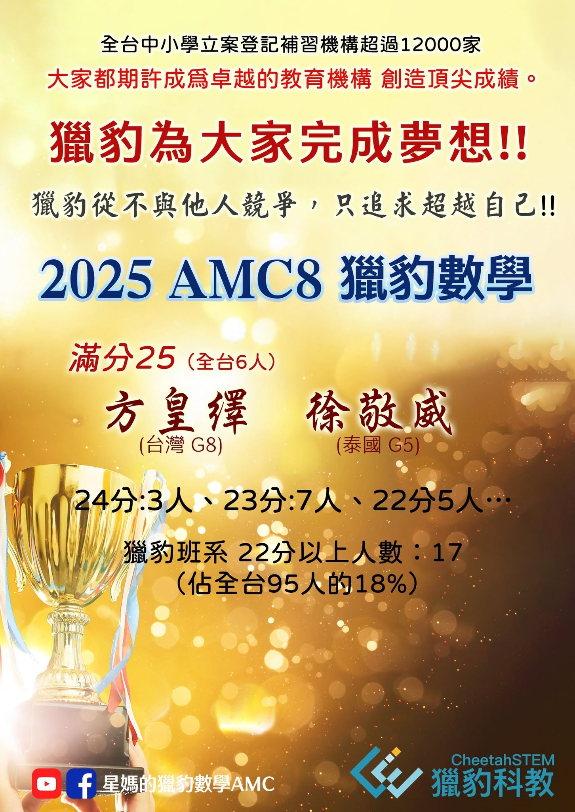
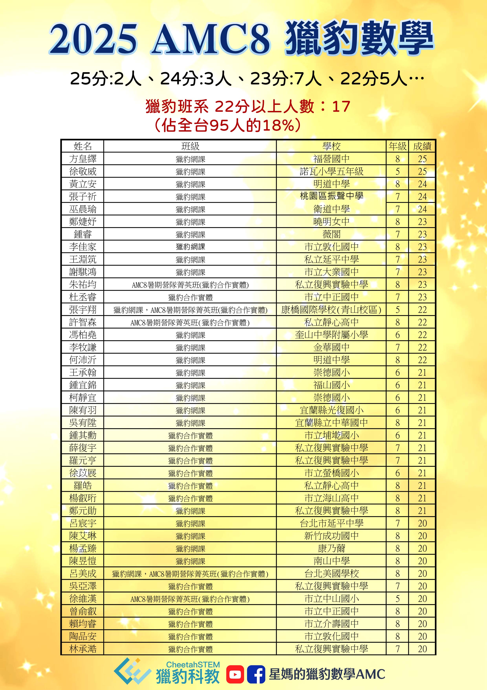

2025AMC8 獵豹數學 一騎絕塵～我們不與其他人競爭，追求超越自己‼️
美國數學協會(MAA)舉辦的AMC是全球最多人參與的中學數學競賽，也是美國選拔IMO國手的中央大道。
每年台灣都有許多數學小菁英在AMC8華山論劍，同台競技。
AMC的考題出自許多美國大學數學教授與專業人士之筆，題目靈活有趣，由淺入深，頗富創意。
參加過AMC8的同學都深刻體會到這競賽，入手極易 沒有門檻，不需課外知識（美國課綱）鮮少重複考古題，但要獲得20分以上卻相當不容易！
能在AMC達到22分以上的孩子（約前1.5%）除非天縱英明，否則都得經歷好幾年的勤奮學習與挫折磨練。
例如在這次競賽獲得滿分的兩位孩子：
新北市的方皇繹同學，是數學競賽的常勝軍。從小學四年級便開始挑戰AMC，歷經數年終於得以摘冠。
在泰國就讀國際學校五年級的徐敬威小弟弟，在爸爸的指導下超前學習，參加獵豹AMC線上網課，遇到困難反覆琢磨，從不退縮放棄！
這次在AMC8中表現亮麗的孩子，值得我們喝采的不是他們的分數，而是他們實踐了獵豹一直強調的「菁英精神」：
探索未知 擁抱改變
不畏挫折 勇於挑戰
超越自我‼️
註：
本次AMC活動，中國大陸傳出洩題風波（因為他們有許多重點國中入學要參考AMC8成績），獵豹雖有多位孩子取得高分，但無法鑑別其成績是否符合獵豹的價值觀，我們的榜單不予列入。

